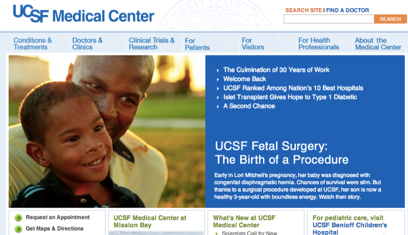

UC San Francisco Medical Center
Features
- organization doesn't
Displays Blue Button Logo on website
- you can
View your records online
- you can't
Download your records
- you can't
Securely send your records to your preferred application
- you can't
Automatically receive updates to your health records
- there are
Additional features
- Manage health records for family members
- Refill your prescription
- Schedule or manage appointments
- Send and receive secure messages
login to UC San Francisco Medical Center
get your health records
About UC San Francisco Medical Center
UCSF Medical Center is recognized throughout the world for innovative patient care, advanced technology and pioneering research. We are one of the nation's top 10 hospitals, according to an annual survey by U.S. News & World Report. For more than a century, we have offered the highest quality medical treatment.
This profile was last updated on Feb 22nd, 2014.